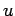
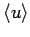
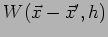
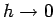
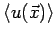
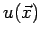

Nächste Seite: Notation: Aufwärts: Physikalische Grundlagen Vorherige Seite: NAVIER-STOKES-Gleichungen Inhalt
Im SPH-Formalismus wird die Verteilung einer physikalischen Größe  
Dabei muss der Glättungskern


muss der geglättete Wert
gegen
gehen.